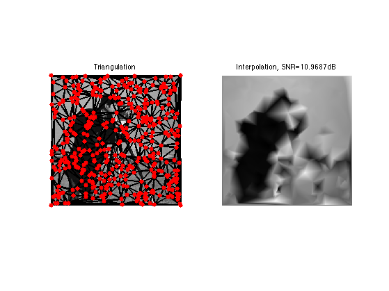
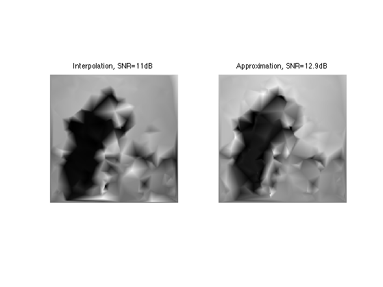
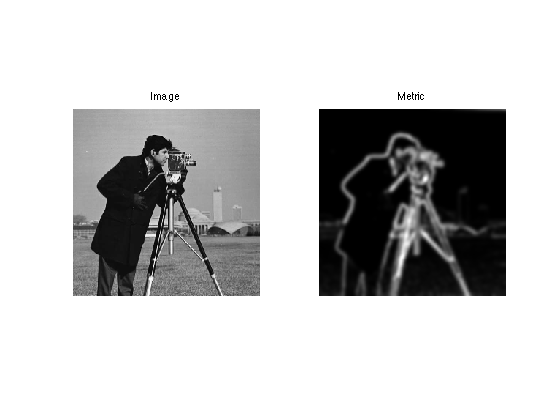
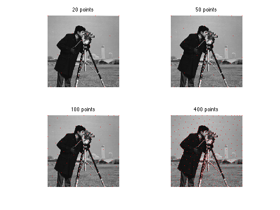
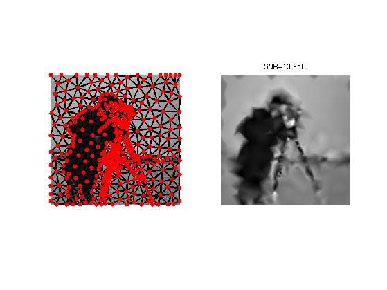
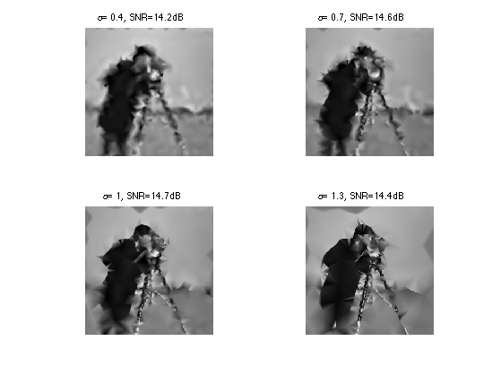

\[
\newcommand{\NN}{\mathbb{N}}
\newcommand{\CC}{\mathbb{C}}
\newcommand{\GG}{\mathbb{G}}
\newcommand{\LL}{\mathbb{L}}
\newcommand{\PP}{\mathbb{P}}
\newcommand{\QQ}{\mathbb{Q}}
\newcommand{\RR}{\mathbb{R}}
\newcommand{\VV}{\mathbb{V}}
\newcommand{\ZZ}{\mathbb{Z}}
\newcommand{\FF}{\mathbb{F}}
\newcommand{\KK}{\mathbb{K}}
\newcommand{\UU}{\mathbb{U}}
\newcommand{\EE}{\mathbb{E}}
\newcommand{\Aa}{\mathcal{A}}
\newcommand{\Bb}{\mathcal{B}}
\newcommand{\Cc}{\mathcal{C}}
\newcommand{\Dd}{\mathcal{D}}
\newcommand{\Ee}{\mathcal{E}}
\newcommand{\Ff}{\mathcal{F}}
\newcommand{\Gg}{\mathcal{G}}
\newcommand{\Hh}{\mathcal{H}}
\newcommand{\Ii}{\mathcal{I}}
\newcommand{\Jj}{\mathcal{J}}
\newcommand{\Kk}{\mathcal{K}}
\newcommand{\Ll}{\mathcal{L}}
\newcommand{\Mm}{\mathcal{M}}
\newcommand{\Nn}{\mathcal{N}}
\newcommand{\Oo}{\mathcal{O}}
\newcommand{\Pp}{\mathcal{P}}
\newcommand{\Qq}{\mathcal{Q}}
\newcommand{\Rr}{\mathcal{R}}
\newcommand{\Ss}{\mathcal{S}}
\newcommand{\Tt}{\mathcal{T}}
\newcommand{\Uu}{\mathcal{U}}
\newcommand{\Vv}{\mathcal{V}}
\newcommand{\Ww}{\mathcal{W}}
\newcommand{\Xx}{\mathcal{X}}
\newcommand{\Yy}{\mathcal{Y}}
\newcommand{\Zz}{\mathcal{Z}}
\newcommand{\al}{\alpha}
\newcommand{\la}{\lambda}
\newcommand{\ga}{\gamma}
\newcommand{\Ga}{\Gamma}
\newcommand{\La}{\Lambda}
\newcommand{\Si}{\Sigma}
\newcommand{\si}{\sigma}
\newcommand{\be}{\beta}
\newcommand{\de}{\delta}
\newcommand{\De}{\Delta}
\renewcommand{\phi}{\varphi}
\renewcommand{\th}{\theta}
\newcommand{\om}{\omega}
\newcommand{\Om}{\Omega}
\renewcommand{\epsilon}{\varepsilon}
\newcommand{\Calpha}{\mathrm{C}^\al}
\newcommand{\Cbeta}{\mathrm{C}^\be}
\newcommand{\Cal}{\text{C}^\al}
\newcommand{\Cdeux}{\text{C}^{2}}
\newcommand{\Cun}{\text{C}^{1}}
\newcommand{\Calt}[1]{\text{C}^{#1}}
\newcommand{\lun}{\ell^1}
\newcommand{\ldeux}{\ell^2}
\newcommand{\linf}{\ell^\infty}
\newcommand{\ldeuxj}{{\ldeux_j}}
\newcommand{\Lun}{\text{\upshape L}^1}
\newcommand{\Ldeux}{\text{\upshape L}^2}
\newcommand{\Lp}{\text{\upshape L}^p}
\newcommand{\Lq}{\text{\upshape L}^q}
\newcommand{\Linf}{\text{\upshape L}^\infty}
\newcommand{\lzero}{\ell^0}
\newcommand{\lp}{\ell^p}
\renewcommand{\d}{\ins{d}}
\newcommand{\Grad}{\text{Grad}}
\newcommand{\grad}{\text{grad}}
\renewcommand{\div}{\text{div}}
\newcommand{\diag}{\text{diag}}
\newcommand{\pd}[2]{ \frac{ \partial #1}{\partial #2} }
\newcommand{\pdd}[2]{ \frac{ \partial^2 #1}{\partial #2^2} }
\newcommand{\dotp}[2]{\langle #1,\,#2\rangle}
\newcommand{\norm}[1]{|\!| #1 |\!|}
\newcommand{\normi}[1]{\norm{#1}_{\infty}}
\newcommand{\normu}[1]{\norm{#1}_{1}}
\newcommand{\normz}[1]{\norm{#1}_{0}}
\newcommand{\abs}[1]{\vert #1 \vert}
\newcommand{\argmin}{\text{argmin}}
\newcommand{\argmax}{\text{argmax}}
\newcommand{\uargmin}[1]{\underset{#1}{\argmin}\;}
\newcommand{\uargmax}[1]{\underset{#1}{\argmax}\;}
\newcommand{\umin}[1]{\underset{#1}{\min}\;}
\newcommand{\umax}[1]{\underset{#1}{\max}\;}
\newcommand{\pa}[1]{\left( #1 \right)}
\newcommand{\choice}[1]{ \left\{ \begin{array}{l} #1 \end{array} \right. }
\newcommand{\enscond}[2]{ \left\{ #1 \;:\; #2 \right\} }
\newcommand{\qandq}{ \quad \text{and} \quad }
\newcommand{\qqandqq}{ \qquad \text{and} \qquad }
\newcommand{\qifq}{ \quad \text{if} \quad }
\newcommand{\qqifqq}{ \qquad \text{if} \qquad }
\newcommand{\qwhereq}{ \quad \text{where} \quad }
\newcommand{\qqwhereqq}{ \qquad \text{where} \qquad }
\newcommand{\qwithq}{ \quad \text{with} \quad }
\newcommand{\qqwithqq}{ \qquad \text{with} \qquad }
\newcommand{\qforq}{ \quad \text{for} \quad }
\newcommand{\qqforqq}{ \qquad \text{for} \qquad }
\newcommand{\qqsinceqq}{ \qquad \text{since} \qquad }
\newcommand{\qsinceq}{ \quad \text{since} \quad }
\newcommand{\qarrq}{\quad\Longrightarrow\quad}
\newcommand{\qqarrqq}{\quad\Longrightarrow\quad}
\newcommand{\qiffq}{\quad\Longleftrightarrow\quad}
\newcommand{\qqiffqq}{\qquad\Longleftrightarrow\qquad}
\newcommand{\qsubjq}{ \quad \text{subject to} \quad }
\newcommand{\qqsubjqq}{ \qquad \text{subject to} \qquad }
\]
Geodesic Triangulation for Image Compression
This tour explores the use geodesic triangulations to perform image compression.
Contents
Installing toolboxes and setting up the path.
You need to download the following files: signal toolbox, general toolbox and graph toolbox.
You need to unzip these toolboxes in your working directory, so that you have toolbox_signal, toolbox_general and toolbox_graph in your directory.
For Scilab user: you must replace the Matlab comment '%' by its Scilab counterpart '//'.
Recommandation: You should create a text file named for instance numericaltour.sce (in Scilab) or numericaltour.m (in Matlab) to write all the Scilab/Matlab command you want to execute. Then, simply run exec('numericaltour.sce'); (in Scilab) or numericaltour; (in Matlab) to run the commands.
Execute this line only if you are using Matlab.
getd = @(p)path(p,path);
Then you can add the toolboxes to the path.
getd('toolbox_signal/');
getd('toolbox_general/');
getd('toolbox_graph/');
Image Approximation with Triangulation
It is possible to approximate an image over a triangulation using piecewise linear splines.
Load an image.
name = 'cameraman';
n = 256;
M = rescale( load_image(name, n) );
Number of points used to compute the approximation. The more points, the smallest the error.
m = 400;
Seeds random points, include the corners into these points.
vertex = floor( rand(2,m-4)*(n-1) ) +1;
vertex(:,end+1:end+4) = [[1;1] [1;n] [n;n] [n;1]];
Compute a Delaunay triangulation.
faces = compute_delaunay(vertex);
A first way to perform an approximation with m triangles is to interpolate the image at the sampling points vertex.
vinterp = interp2(M, vertex(2,:), vertex(1,:));
Each vinterp(i) is the value of the approximating image at the vertex(:,i). We compute a spline interpolation.
Minterp = compute_triangulation_interpolation(faces,vertex,vinterp, n);
Display the approximation.
clf;
subplot(1,2,1);
plot_triangulation(vertex,faces, M);
title('Triangulation');
subplot(1,2,2);
imageplot(clamp(Minterp), ['Interpolation, SNR=' num2str(snr(Minterp,M)) 'dB']);

Another, better way to compute the approximation is to compute coefficients vapprox that performs the best L2 approximation with linear spline.
vapprox = compute_orthoproj_triangulation(vertex, faces, M);
Mapprox = compute_triangulation_interpolation(faces,vertex,vapprox, n);
Compare interpolation and approximation.
clf;
imageplot(clamp(Minterp), ['Interpolation, SNR=' num2str(snr(Minterp,M),3) 'dB'], 1,2,1);
imageplot(clamp(Mapprox), ['Approximation, SNR=' num2str(snr(Mapprox,M),3) 'dB'], 1,2,2);

Isotropic Metrics for Image Approximation
It is possible to compute optimized sampling location vertex by using the farthest point sampling algorithm with a well chosen metric W so that more points are put in areas of strong gradient.
The metric will be of the form
W(x) = (norm(grad_x(M))+epsilon)^alpha|
where epsilon and alpha control the density variation strength.
Parameters for the metric.
alpha = .7;
epsilon = 1e-2;
Exercice 1: (check the solution) Compute a density function that is larger at area of large gradient. W(x) = (norm(grad(M))+epsilon)^alpha|, for alpha=.7. To stabilize the process, you can smooth a bit the gradient magnitude.
exo1;

Exercice 2: (check the solution) Perform farthest points sampling to compute sampling location vertex and the corresponding geodesic Delaunay triangulation faces.
exo2;

Perform approximation over the triangulation.
vgeod = compute_orthoproj_triangulation(vertex, faces, M);
Mgeod = compute_triangulation_interpolation(faces,vertex,vgeod, n);
Compare interpolation and approximation.
clf;
subplot(1,2,1);
plot_triangulation(vertex,faces, M);
subplot(1,2,2);
imageplot(clamp(Mgeod), ['SNR=' num2str(snr(Mgeod,M),3) 'dB']);

Exercice 3: (check the solution) For a large value of m compute the approximation for several alpha.
exo3;
